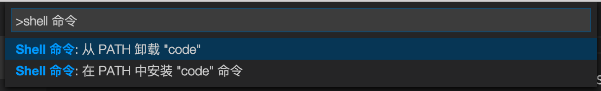

<!DOCTYPE HTML>
<html lang="zh-hans" >
    <head>
        <meta charset="UTF-8">
        <meta content="text/html; charset=utf-8" http-equiv="Content-Type">
        <title>安装 · vscode-docs</title>
        <meta http-equiv="X-UA-Compatible" content="IE=edge" />
        <meta name="description" content="">
        <meta name="generator" content="GitBook 3.2.3">
        <meta name="author" content="VSCodeContributorsinChina">
        
        
    
    <link rel="stylesheet" href="../../gitbook/style.css">

    
            
                
                <link rel="stylesheet" href="../../gitbook/gitbook-plugin-search-pro/search.css">
                
            
                
                <link rel="stylesheet" href="../../gitbook/gitbook-plugin-intopic-toc/style.css">
                
            
                
                <link rel="stylesheet" href="../../gitbook/gitbook-plugin-highlight/website.css">
                
            
                
                <link rel="stylesheet" href="../../gitbook/gitbook-plugin-fontsettings/website.css">
                
            
        

    

    
        
    
        
    
        
    
        
    
        
    
        
    

        
    
    
    <meta name="HandheldFriendly" content="true"/>
    <meta name="viewport" content="width=device-width, initial-scale=1, user-scalable=no">
    <meta name="apple-mobile-web-app-capable" content="yes">
    <meta name="apple-mobile-web-app-status-bar-style" content="black">
    <link rel="apple-touch-icon-precomposed" sizes="152x152" href="../../gitbook/images/apple-touch-icon-precomposed-152.png">
    <link rel="shortcut icon" href="../../gitbook/images/favicon.ico" type="image/x-icon">

    
    <link rel="next" href="扩展市场.html" />
    
    
    <link rel="prev" href="基础.html" />
    

    </head>
    <body>
        
<div class="book">
    <div class="book-summary">
        
            
<div id="book-search-input" role="search">
    <input type="text" placeholder="输入并搜索" />
</div>

            
                <nav role="navigation">
                


<ul class="summary">
    
    

    

    
        
        
    
        <li class="chapter " data-level="1.1" data-path="../../">
            
                <a href="../../">
            
                    
                    简介
            
                </a>
            

            
        </li>
    
        <li class="chapter " data-level="1.2" >
            
                <a target="_blank" href="https://code.visualstudio.com/docs">
            
                    
                    官方文档
            
                </a>
            

            
        </li>
    
        <li class="chapter " data-level="1.3" data-path="../Overview.html">
            
                <a href="../Overview.html">
            
                    
                    概览
            
                </a>
            

            
        </li>
    
        <li class="chapter " data-level="1.4" data-path="../快速入门.md">
            
                <span>
            
                    
                    快速入门(暂无)
            
                </a>
            

            
            <ul class="articles">
                
    
        <li class="chapter " data-level="1.4.1" data-path="../快速入门/介绍视频.html">
            
                <a href="../快速入门/介绍视频.html">
            
                    
                    视频介绍
            
                </a>
            

            
        </li>
    
        <li class="chapter " data-level="1.4.2" data-path="../快速入门/小技巧.html">
            
                <a href="../快速入门/小技巧.html">
            
                    
                    小技巧
            
                </a>
            

            
        </li>
    
        <li class="chapter " data-level="1.4.3" data-path="../快速入门/用户接口.html">
            
                <a href="../快速入门/用户接口.html">
            
                    
                    用户接口
            
                </a>
            

            
        </li>
    
        <li class="chapter " data-level="1.4.4" data-path="../快速入门/主题.html">
            
                <a href="../快速入门/主题.html">
            
                    
                    主题
            
                </a>
            

            
        </li>
    
        <li class="chapter " data-level="1.4.5" data-path="../快速入门/设置.html">
            
                <a href="../快速入门/设置.html">
            
                    
                    设置
            
                </a>
            

            
        </li>
    
        <li class="chapter " data-level="1.4.6" data-path="../快速入门/快捷键绑定.html">
            
                <a href="../快速入门/快捷键绑定.html">
            
                    
                    快捷键绑定
            
                </a>
            

            
        </li>
    
        <li class="chapter " data-level="1.4.7" data-path="../快速入门/语言区域.html">
            
                <a href="../快速入门/语言区域.html">
            
                    
                    语言区域
            
                </a>
            

            
        </li>
    

            </ul>
            
        </li>
    
        <li class="chapter " data-level="1.5" data-path="../../summary/编辑器.html">
            
                <a href="../../summary/编辑器.html">
            
                    
                    编辑器
            
                </a>
            

            
            <ul class="articles">
                
    
        <li class="chapter " data-level="1.5.1" data-path="基础.html">
            
                <a href="基础.html">
            
                    
                    基础
            
                </a>
            

            
        </li>
    
        <li class="chapter active" data-level="1.5.2" data-path="安装.html">
            
                <a href="安装.html">
            
                    
                    安装
            
                </a>
            

            
        </li>
    
        <li class="chapter " data-level="1.5.3" data-path="扩展市场.html">
            
                <a href="扩展市场.html">
            
                    
                    扩展市场
            
                </a>
            

            
        </li>
    
        <li class="chapter " data-level="1.5.4" data-path="任务.html">
            
                <a href="任务.html">
            
                    
                    任务
            
                </a>
            

            
        </li>
    
        <li class="chapter " data-level="1.5.5" data-path="调试.html">
            
                <a href="调试.html">
            
                    
                    调试
            
                </a>
            

            
        </li>
    
        <li class="chapter " data-level="1.5.6" data-path="为什么选用VSCode.html">
            
                <a href="为什么选用VSCode.html">
            
                    
                    为什么选用VSCode
            
                </a>
            

            
        </li>
    
        <li class="chapter " data-level="1.5.7" data-path="版本控制.html">
            
                <a href="版本控制.html">
            
                    
                    版本控制
            
                </a>
            

            
        </li>
    
        <li class="chapter " data-level="1.5.8" data-path="易用性.html">
            
                <a href="易用性.html">
            
                    
                    易用性
            
                </a>
            

            
        </li>
    
        <li class="chapter " data-level="1.5.9" data-path="与时俱进的编辑体验.html">
            
                <a href="与时俱进的编辑体验.html">
            
                    
                    与时俱进的编辑体验
            
                </a>
            

            
        </li>
    

            </ul>
            
        </li>
    
        <li class="chapter " data-level="1.6" data-path="../../summary/定制化.html">
            
                <a href="../../summary/定制化.html">
            
                    
                    定制化
            
                </a>
            

            
            <ul class="articles">
                
    
        <li class="chapter " data-level="1.6.1" data-path="../定制化/概述.html">
            
                <a href="../定制化/概述.html">
            
                    
                    概述
            
                </a>
            

            
        </li>
    
        <li class="chapter " data-level="1.6.2" data-path="../定制化/用户和工作空间.html">
            
                <a href="../定制化/用户和工作空间.html">
            
                    
                    用户和工作空间
            
                </a>
            

            
        </li>
    
        <li class="chapter " data-level="1.6.3" data-path="../定制化/快捷键绑定.html">
            
                <a href="../定制化/快捷键绑定.html">
            
                    
                    快捷键绑定
            
                </a>
            

            
        </li>
    
        <li class="chapter " data-level="1.6.4" data-path="../定制化/用户定义代码段.html">
            
                <a href="../定制化/用户定义代码段.html">
            
                    
                    用户定义代码段
            
                </a>
            

            
        </li>
    
        <li class="chapter " data-level="1.6.5" data-path="../定制化/调色板.html">
            
                <a href="../定制化/调色板.html">
            
                    
                    调色板
            
                </a>
            

            
        </li>
    
        <li class="chapter " data-level="1.6.6" data-path="../定制化/主题.html">
            
                <a href="../定制化/主题.html">
            
                    
                    主题
            
                </a>
            

            
        </li>
    
        <li class="chapter " data-level="1.6.7" data-path="../定制化/语言区域.html">
            
                <a href="../定制化/语言区域.html">
            
                    
                    语言区域
            
                </a>
            

            
        </li>
    

            </ul>
            
        </li>
    
        <li class="chapter " data-level="1.7" data-path="../../summary/工具.html">
            
                <a href="../../summary/工具.html">
            
                    
                    工具
            
                </a>
            

            
            <ul class="articles">
                
    
        <li class="chapter " data-level="1.7.1" data-path="../工具/vse命令行工具.html">
            
                <a href="../工具/vse命令行工具.html">
            
                    
                    vse命令行工具
            
                </a>
            

            
        </li>
    
        <li class="chapter " data-level="1.7.2" data-path="../工具/yocode扩展生成器.html">
            
                <a href="../工具/yocode扩展生成器.html">
            
                    
                    yocode扩展生成器
            
                </a>
            

            
        </li>
    
        <li class="chapter " data-level="1.7.3" data-path="../工具/范例.html">
            
                <a href="../工具/范例.html">
            
                    
                    范例
            
                </a>
            

            
        </li>
    

            </ul>
            
        </li>
    
        <li class="chapter " data-level="1.8" data-path="../../summary/技术支持.html">
            
                <a href="../../summary/技术支持.html">
            
                    
                    技术支持
            
                </a>
            

            
            <ul class="articles">
                
    
        <li class="chapter " data-level="1.8.1" data-path="../技术支持/常见问题.html">
            
                <a href="../技术支持/常见问题.html">
            
                    
                    常见问题
            
                </a>
            

            
        </li>
    
        <li class="chapter " data-level="1.8.2" data-path="../技术支持/错误代码.html">
            
                <a href="../技术支持/错误代码.html">
            
                    
                    错误代码
            
                </a>
            

            
        </li>
    
        <li class="chapter " data-level="1.8.3" data-path="../技术支持/如何升级.html">
            
                <a href="../技术支持/如何升级.html">
            
                    
                    如何升级
            
                </a>
            

            
        </li>
    
        <li class="chapter " data-level="1.8.4" data-path="../技术支持/系统要求.html">
            
                <a href="../技术支持/系统要求.html">
            
                    
                    系统要求
            
                </a>
            

            
        </li>
    

            </ul>
            
        </li>
    
        <li class="chapter " data-level="1.9" data-path="../../summary/扩展.html">
            
                <a href="../../summary/扩展.html">
            
                    
                    扩展
            
                </a>
            

            
            <ul class="articles">
                
    
        <li class="chapter " data-level="1.9.1" data-path="../扩展/概述.html">
            
                <a href="../扩展/概述.html">
            
                    
                    概述
            
                </a>
            

            
        </li>
    
        <li class="chapter " data-level="1.9.2" data-path="../扩展/范例-hello-world.html">
            
                <a href="../扩展/范例-hello-world.html">
            
                    
                    范例-hello-world
            
                </a>
            

            
        </li>
    
        <li class="chapter " data-level="1.9.3" data-path="../扩展/范例-word-count.html">
            
                <a href="../扩展/范例-word-count.html">
            
                    
                    范例-word-count
            
                </a>
            

            
        </li>
    
        <li class="chapter " data-level="1.9.4" data-path="../扩展/范例-language-server.html">
            
                <a href="../扩展/范例-language-server.html">
            
                    
                    范例-language-server
            
                </a>
            

            
        </li>
    
        <li class="chapter " data-level="1.9.5" data-path="../扩展/范例-调试器.html">
            
                <a href="../扩展/范例-调试器.html">
            
                    
                    范例-调试器
            
                </a>
            

            
        </li>
    
        <li class="chapter " data-level="1.9.6" data-path="../扩展/调试-扩展.html">
            
                <a href="../扩展/调试-扩展.html">
            
                    
                    调试-扩展
            
                </a>
            

            
        </li>
    
        <li class="chapter " data-level="1.9.7" data-path="../扩展/安装-扩展.html">
            
                <a href="../扩展/安装-扩展.html">
            
                    
                    安装-扩展
            
                </a>
            

            
        </li>
    
        <li class="chapter " data-level="1.9.8" data-path="../扩展/范式-原则.html">
            
                <a href="../扩展/范式-原则.html">
            
                    
                    范式-原则
            
                </a>
            

            
        </li>
    
        <li class="chapter " data-level="1.9.9" data-path="../扩展/测试-扩展.html">
            
                <a href="../扩展/测试-扩展.html">
            
                    
                    测试-扩展
            
                </a>
            

            
        </li>
    
        <li class="chapter " data-level="1.9.10" data-path="../扩展/用我们的方法创造扩展.html">
            
                <a href="../扩展/用我们的方法创造扩展.html">
            
                    
                    用我们的方法创造扩展
            
                </a>
            

            
        </li>
    

            </ul>
            
        </li>
    
        <li class="chapter " data-level="1.10" data-path="../../summary/扩展API.html">
            
                <a href="../../summary/扩展API.html">
            
                    
                    扩展API
            
                </a>
            

            
            <ul class="articles">
                
    
        <li class="chapter " data-level="1.10.1" data-path="../扩展API/概述.html">
            
                <a href="../扩展API/概述.html">
            
                    
                    概述
            
                </a>
            

            
        </li>
    
        <li class="chapter " data-level="1.10.2" data-path="../扩展API/扩展manifest文件.html">
            
                <a href="../扩展API/扩展manifest文件.html">
            
                    
                    扩展manifest文件
            
                </a>
            

            
        </li>
    
        <li class="chapter " data-level="1.10.3" data-path="../扩展API/扩展点.html">
            
                <a href="../扩展API/扩展点.html">
            
                    
                    扩展点
            
                </a>
            

            
        </li>
    
        <li class="chapter " data-level="1.10.4" data-path="../扩展API/激活事件.html">
            
                <a href="../扩展API/激活事件.html">
            
                    
                    激活事件
            
                </a>
            

            
        </li>
    
        <li class="chapter " data-level="1.10.5" data-path="../扩展API/vscode-api.html">
            
                <a href="../扩展API/vscode-api.html">
            
                    
                    vscode-api
            
                </a>
            

            
        </li>
    
        <li class="chapter " data-level="1.10.6" data-path="../扩展API/vscode-api-命令.html">
            
                <a href="../扩展API/vscode-api-命令.html">
            
                    
                    vscode-api-命令
            
                </a>
            

            
        </li>
    
        <li class="chapter " data-level="1.10.7" data-path="../扩展API/api调试.html">
            
                <a href="../扩展API/api调试.html">
            
                    
                    api调试
            
                </a>
            

            
        </li>
    

            </ul>
            
        </li>
    
        <li class="chapter " data-level="1.11" data-path="../../summary/语言.html">
            
                <a href="../../summary/语言.html">
            
                    
                    语言
            
                </a>
            

            
            <ul class="articles">
                
    
        <li class="chapter " data-level="1.11.1" data-path="../语言/概述.html">
            
                <a href="../语言/概述.html">
            
                    
                    概述
            
                </a>
            

            
        </li>
    
        <li class="chapter " data-level="1.11.2" data-path="../语言/javascript.html">
            
                <a href="../语言/javascript.html">
            
                    
                    Javascript
            
                </a>
            

            
        </li>
    
        <li class="chapter " data-level="1.11.3" data-path="../语言/json.html">
            
                <a href="../语言/json.html">
            
                    
                    JSON
            
                </a>
            

            
        </li>
    
        <li class="chapter " data-level="1.11.4" data-path="../语言/html.html">
            
                <a href="../语言/html.html">
            
                    
                    HTML(暂无)
            
                </a>
            

            
        </li>
    
        <li class="chapter " data-level="1.11.5" data-path="../语言/css.html">
            
                <a href="../语言/css.html">
            
                    
                    CSS, Sass and Less
            
                </a>
            

            
        </li>
    
        <li class="chapter " data-level="1.11.6" data-path="../语言/typescript.html">
            
                <a href="../语言/typescript.html">
            
                    
                    TypeScript
            
                </a>
            

            
        </li>
    
        <li class="chapter " data-level="1.11.7" data-path="../语言/markdown.html">
            
                <a href="../语言/markdown.html">
            
                    
                    Markdown
            
                </a>
            

            
        </li>
    
        <li class="chapter " data-level="1.11.8" data-path="../语言/cpp.html">
            
                <a href="../语言/cpp.html">
            
                    
                    C++
            
                </a>
            

            
        </li>
    
        <li class="chapter " data-level="1.11.9" data-path="../语言/java.md">
            
                <span>
            
                    
                    Java(暂无)
            
                </a>
            

            
        </li>
    
        <li class="chapter " data-level="1.11.10" data-path="../语言/php.html">
            
                <a href="../语言/php.html">
            
                    
                    PHP
            
                </a>
            

            
        </li>
    
        <li class="chapter " data-level="1.11.11" data-path="../语言/python.html">
            
                <a href="../语言/python.html">
            
                    
                    Python
            
                </a>
            

            
        </li>
    
        <li class="chapter " data-level="1.11.12" data-path="../语言/go.md">
            
                <span>
            
                    
                    Go(暂无)
            
                </a>
            

            
        </li>
    
        <li class="chapter " data-level="1.11.13" data-path="../语言/dockerfile.html">
            
                <a href="../语言/dockerfile.html">
            
                    
                    Dockerfile
            
                </a>
            

            
        </li>
    
        <li class="chapter " data-level="1.11.14" data-path="../语言/t-sql.md">
            
                <span>
            
                    
                    T-SQL(暂无)
            
                </a>
            

            
        </li>
    
        <li class="chapter " data-level="1.11.15" data-path="../语言/csharp.html">
            
                <a href="../语言/csharp.html">
            
                    
                    C#
            
                </a>
            

            
        </li>
    

            </ul>
            
        </li>
    
        <li class="chapter " data-level="1.12" data-path="../../summary/运行时.html">
            
                <a href="../../summary/运行时.html">
            
                    
                    运行时
            
                </a>
            

            
            <ul class="articles">
                
    
        <li class="chapter " data-level="1.12.1" data-path="../运行时/nodejs.html">
            
                <a href="../运行时/nodejs.html">
            
                    
                    nodejs
            
                </a>
            

            
        </li>
    
        <li class="chapter " data-level="1.12.2" data-path="../运行时/ASPnet5.html">
            
                <a href="../运行时/ASPnet5.html">
            
                    
                    ASPnet5
            
                </a>
            

            
        </li>
    
        <li class="chapter " data-level="1.12.3" data-path="../运行时/unity.html">
            
                <a href="../运行时/unity.html">
            
                    
                    unity
            
                </a>
            

            
        </li>
    
        <li class="chapter " data-level="1.12.4" data-path="../运行时/office.html">
            
                <a href="../运行时/office.html">
            
                    
                    office
            
                </a>
            

            
        </li>
    

            </ul>
            
        </li>
    

    

    <li class="divider"></li>

    <li>
        <a href="https://www.gitbook.com" target="blank" class="gitbook-link">
            本书使用 GitBook 发布
        </a>
    </li>
</ul>


                </nav>
            
        
    </div>

    <div class="book-body">
        
            <div class="body-inner">
                
                    

<div class="book-header" role="navigation">
    

    <!-- Title -->
    <h1>
        <i class="fa fa-circle-o-notch fa-spin"></i>
        <a href="../.." >安装</a>
    </h1>
</div>


                    <div class="page-wrapper" tabindex="-1" role="main">
                        <div class="page-inner">
                            
<div id="book-search-results">
    <div class="search-noresults">
    
                                <section class="normal markdown-section">
                                
                                <h1 id="&#x5B89;&#x88C5;visual-studio-code">&#x5B89;&#x88C5;Visual Studio Code</h1>
<p>&#x5B89;&#x88C5;&#x4E0E;&#x4F7F;&#x7528;VS Code&#x975E;&#x5E38;&#x7B80;&#x5355;&#x548C;&#x5FEB;&#x6377;&#x3002;&#x5404;&#x5E73;&#x53F0;&#x8BF7;&#x6309;&#x7167;&#x5982;&#x4E0B;&#x6307;&#x5BFC;&#x5B89;&#x88C5;&#x5373;&#x53EF;&#x3002;</p>
<p>VS Code&#x8F7B;&#x91CF;&#x4E14;&#x53EF;&#x4EE5;&#x8FD0;&#x884C;&#x5728;&#x5927;&#x591A;&#x6570;&#x53EF;&#x7528;&#x786C;&#x4EF6;&#x548C;&#x5E73;&#x53F0;&#x7248;&#x672C;&#x3002;&#x60A8;&#x53EF;&#x4EE5;&#x91CD;&#x65B0;&#x67E5;&#x770B;<a href="https://code.visualstudio.com/docs/supporting/requirements" target="_blank">&#x7CFB;&#x7EDF;&#x8981;&#x6C42;</a>&#x4EE5;&#x68C0;&#x67E5;&#x60A8;&#x7684;&#x673A;&#x5668;&#x914D;&#x7F6E;&#x662F;&#x5426;&#x652F;&#x6301;VS Code&#x3002;</p>
<blockquote>
<p>Note&#xFF1A;VS Code&#x662F;&#x4E00;&#x6B3E;&#x5360;&#x7528;&#x7A7A;&#x95F4;&#x4E0D;&#x5927;&#x7684;&#x7F16;&#x8F91;&#x5668;&#x3002;&#x4E0D;&#x540C;&#x4E8E;&#x4F20;&#x7EDF;IDEs&#x51E0;&#x4E4E;&#x5305;&#x542B;&#x4E86;&#x6240;&#x6709;&#x7EC4;&#x4EF6;&#xFF0C;&#x60A8;&#x53EF;&#x4EE5;&#x4E3A;&#x4E86;&#x60A8;&#x6240;&#x5173;&#x5FC3;&#x7684;&#x5F00;&#x53D1;&#x6280;&#x672F;&#x800C;&#x8C03;&#x6574;&#x60A8;&#x7684;&#x5B89;&#x88C5;&#x3002;&#x786E;&#x4FDD;&#x5728;&#x5E73;&#x53F0;&#x6307;&#x5BFC;&#x540E;&#x9605;&#x8BFB;<a href="https://github.com/heshenghuan/CN-VScode-Docs/blob/hsh/md/%E7%BC%96%E8%BE%91%E5%99%A8/%E5%AE%89%E8%A3%85.md#&#x9644;&#x52A0;&#x7EC4;&#x4EF6;" target="_blank">&#x9644;&#x52A0;&#x7EC4;&#x4EF6;</a>&#x90E8;&#x5206;&#x5B66;&#x4E60;&#x5982;&#x4F55;&#x5BA2;&#x5236;&#x5316;&#x60A8;&#x7684;VS Code&#x5B89;&#x88C5;&#x3002;</p>
</blockquote>
<h2 id="mac-os-x">Mac OS X</h2>
<ol>
<li>&#x4E0B;&#x8F7D;&#x9002;&#x7528;&#x4E8E;Mac OS X&#x7684;<a href="https://go.microsoft.com/fwlink/?LinkID=534106" target="_blank">Visual Studio Code</a>&#x3002;</li>
<li>&#x53CC;&#x51FB;&#x4E0B;&#x8F7D;&#x7684;&#x5B58;&#x6863;&#x5C55;&#x5F00;&#x5185;&#x5BB9;&#x3002;</li>
<li>&#x62D6;&#x52A8;<code>Visual Studio Code.app</code>&#x81F3;<code>Applications</code>&#x6587;&#x4EF6;&#x5939;&#xFF0C;&#x5728;<code>Launchpad</code>&#x4E2D;&#x70B9;&#x51FB;&#x6253;&#x5F00;&#x3002;</li>
<li>&#x53F3;&#x952E;&#x70B9;&#x51FB;Dock&#x680F;&#x4E2D;&#x7684;VS Code&#x56FE;&#x6807;&#xFF0C;&#x4F9D;&#x6B21;&#x9009;&#x62E9;<code>&#x9009;&#x9879;</code>&#x3001;<code>&#x5728;Dock&#x4E2D;&#x4FDD;&#x7559;</code>&#x3002;</li>
</ol>
<blockquote>
<p>Tip&#xFF1A;&#x5982;&#x679C;&#x60A8;&#x5E0C;&#x671B;&#x80FD;&#x591F;&#x5728;&#x7EC8;&#x7AEF;&#x4E2D;&#x8F93;&#x5165;&#x2018;code&#x2019;&#x5C31;&#x80FD;&#x8FD0;&#x884C;VS Code&#xFF0C;VS Code&#x6709;&#x4E00;&#x6761;&#x547D;&#x4EE4;&#xFF0C;<strong>Shell Command: Install &apos;code&apos; command in PATH</strong>&#x53EF;&#x4EE5;&#x5C06;&#x2018;code&#x2019;&#x6DFB;&#x52A0;&#x81F3;&#x60A8;&#x7684;<code>$PATH</code>&#x4E2D;&#x3002;</p>
<p>&#x5B89;&#x88C5;&#x5B8C;&#x6210;&#x4E4B;&#x540E;&#xFF0C;&#x8FD0;&#x884C;VS Code&#x3002;&#x73B0;&#x5728;&#xFF0C;&#x6253;&#x5F00;&#x547D;&#x4EE4;&#x9762;&#x677F;&#xFF08;&#x6309;F1&#x952E;&#xFF09;&#x8F93;&#x5165;<code>Shell &#x547D;&#x4EE4;</code>&#x627E;&#x5230;<code>Shell &#x547D;&#x4EE4;: &#x5728;PATH&#x4E2D;&#x5B89;&#x88C5;&#x201C;code&#x201D;&#x547D;&#x4EE4;</code>&#x3002;</p>
<p></p>
<p>&#x547D;&#x4EE4;&#x6267;&#x884C;&#x5B8C;&#x6210;&#x4E4B;&#x540E;&#xFF0C;&#x91CD;&#x542F;&#x7EC8;&#x7AEF;&#x5DE5;&#x5177;&#x4F7F;&#x65B0;&#x7684;<code>$PATH</code>&#x53EF;&#x7528;&#x3002;&#x73B0;&#x5728;&#xFF0C;&#x60A8;&#x53EF;&#x4EE5;&#x7B80;&#x5355;&#x5730;&#x5728;&#x7EC8;&#x7AEF;&#x4E2D;&#x4EFB;&#x610F;&#x6587;&#x4EF6;&#x5939;&#x4E0B;&#x8F93;&#x5165;&#x2018;code .&#x2019;&#x6765;&#x7F16;&#x8F91;&#x8BE5;&#x6587;&#x4EF6;&#x5939;&#x4E0B;&#x7684;&#x6587;&#x4EF6;&#x4E86;&#x3002;</p>
</blockquote>
<h2 id="linux">Linux</h2>
<ol>
<li><p>&#x4E0B;&#x8F7D;&#x9002;&#x7528;&#x4E8E;&#x60A8;&#x53D1;&#x884C;&#x7248;&#x7684;Visual Studio Code&#xFF0C;&#x57FA;&#x4E8E;Debian&#x7684;&#x53D1;&#x884C;&#x7248;&#x5982;Ubuntu&#x8BF7;&#x70B9;&#x51FB;<a href="http://go.microsoft.com/fwlink/?LinkID=760868" target="_blank">.deb</a>,&#x57FA;&#x4E8E;Red Hat(rpm&#x5305;&#x7BA1;&#x7406;&#x683C;&#x5F0F;&#xFF0C;&#x5305;&#x62EC;OpenSuSE)&#x7684;&#x53D1;&#x884C;&#x7248;&#x5982;Fedora&#x6216;CentOS&#x8BF7;&#x70B9;&#x51FB;<a href="http://go.microsoft.com/fwlink/?LinkID=760867" target="_blank">.rpm</a>&#x3002;&#x6CE8;&#x610F;&#xFF0C;32-bit &#x4E8C;&#x8FDB;&#x5236;&#x5B89;&#x88C5;&#x6587;&#x4EF6;&#x5728;<a href="https://code.visualstudio.com/Download" target="_blank">&#x4E0B;&#x8F7D;&#x9875;&#x9762;</a>&#x540C;&#x6837;&#x53EF;&#x7528;&#x3002;</p>
</li>
<li><p>&#x901A;&#x8FC7;&#x4EFB;&#x4E00;GUI&#x8F6F;&#x4EF6;&#x5305;&#x7BA1;&#x7406;&#x7CFB;&#x7EDF;&#x5B89;&#x88C5;&#x53EA;&#x9700;&#x53CC;&#x51FB;&#x5305;&#x6587;&#x4EF6;&#x5373;&#x53EF;&#xFF0C;&#x6216;&#x8005;&#x4E5F;&#x53EF;&#x4EE5;&#x4F7F;&#x7528;&#x547D;&#x4EE4;&#x884C;&#x5B89;&#x88C5;:</p>
<pre><code class="lang-shell"># For .deb
sudo dpkg -i &lt;file&gt;.deb

# For .rpm (Fedora 21 and below)
sudo yum install &lt;file&gt;.rpm

# For .rpm (Fedora 22 and above)
sudo dnf install &lt;file&gt;.rpm
</code></pre>
</li>
<li><p>&#x73B0;&#x5728;VS Code&#x5E94;&#x8BE5;&#x53EF;&#x4EE5;&#x901A;&#x8FC7;launcher&#x6216;&#x5728;&#x547D;&#x4EE4;&#x884C;&#x4E2D;&#x8F93;&#x5165;<code>code</code>&#x8FD0;&#x884C;&#x4E86;&#x3002;</p>
</li>
</ol>
<blockquote>
<p>Tip&#xFF1A;&#x5728;&#x4EFB;&#x610F;&#x6587;&#x4EF6;&#x8DEF;&#x5F84;&#x4E0B;&#x8F93;&#x5165;&#x2018;code ./&#x2019;&#x6765;&#x7F16;&#x8F91;&#x8BE5;&#x6587;&#x4EF6;&#x5939;&#x4E0B;&#x7684;&#x6587;&#x4EF6;&#x3002;</p>
</blockquote>
<h2 id="windows">Windows</h2>
<ol>
<li>&#x4E0B;&#x8F7D;<a href="https://go.microsoft.com/fwlink/?LinkID=534107" target="_blank">Visual Studio Code</a>&#x3002;</li>
<li>&#x53CC;&#x51FB;<code>VSCodeSetup.exe</code>&#x5F00;&#x59CB;&#x5B89;&#x88C5;&#xFF0C;&#x8FD9;&#x5C06;&#x4F1A;&#x82B1;&#x8D39;&#x51E0;&#x5206;&#x949F;&#x3002;</li>
<li>64-bit&#x6784;&#x67B6;&#x4E0B;&#xFF0C;VS Code&#x9ED8;&#x8BA4;&#x5C06;&#x4F1A;&#x5B89;&#x88C5;&#x5728;<code>C:\Program Files (x86)\Microsoft VS Code</code>&#x4E0B;&#x3002;</li>
</ol>
<blockquote>
<p>Note&#xFF1A;VS Code&#x8981;&#x6C42;.NET Framework 4.5&#x5DF2;&#x5B89;&#x88C5;&#xFF0C;&#x5982;&#x679C;&#x60A8;&#x4F7F;&#x7528;&#x7684;&#x662F;Windows 7&#x7CFB;&#x7EDF;&#xFF0C;&#x8BF7;&#x786E;&#x4FDD;.NET Framework 4.5&#x5DF2;&#x5B89;&#x88C5;&#x3002;</p>
<p>Tip&#xFF1A;&#x5B89;&#x88C5;&#x7A0B;&#x5E8F;&#x4F1A;&#x9009;&#x62E9;&#x6DFB;&#x52A0;Visual Studio Code&#x81F3;&#x60A8;&#x7684;<code>%PATH%</code>&#x4E2D;&#xFF0C;&#x4E8E;&#x662F;&#x60A8;&#x5728;&#x63A7;&#x5236;&#x53F0;&#x4E2D;&#x4EFB;&#x610F;&#x6587;&#x4EF6;&#x8DEF;&#x5F84;&#x4E0B;&#x8F93;&#x5165;&#x2018;code .&#x2019;&#x6765;&#x7F16;&#x8F91;&#x8BE5;&#x6587;&#x4EF6;&#x5939;&#x4E0B;&#x7684;&#x6587;&#x4EF6;&#x3002;</p>
<p>Tip&#xFF1A;&#x60A8;&#x53EF;&#x80FD;&#x9700;&#x8981;&#x5728;&#x5B89;&#x88C5;&#x5B8C;&#x6210;&#x540E;&#x6CE8;&#x9500;&#x8BA9;&#x53D8;&#x5316;&#x7684;<code>%PATH%</code>&#x73AF;&#x5883;&#x53D8;&#x91CF;&#x751F;&#x6548;&#x3002;</p>
</blockquote>
<h2 id="&#x9644;&#x52A0;&#x7EC4;&#x4EF6;">&#x9644;&#x52A0;&#x7EC4;&#x4EF6;</h2>
<p>VS Code&#x7684;&#x4E0B;&#x8F7D;&#x4E0D;&#x5927;&#x4E14;&#x53EA;&#x5305;&#x542B;&#x5404;&#x79CD;&#x5F00;&#x53D1;&#x5DE5;&#x4F5C;&#x4E2D;&#x5171;&#x4EAB;&#x7684;&#x6700;&#x5C0F;&#x6570;&#x91CF;&#x7684;&#x7EC4;&#x4EF6;&#xFF0C;&#x5305;&#x62EC;&#x4F8B;&#x5982;&#x7F16;&#x8F91;&#x5668;&#x3001;&#x6587;&#x4EF6;&#x7BA1;&#x7406;&#x3001;&#x7A97;&#x53E3;&#x7BA1;&#x7406;&#x548C;&#x7528;&#x6237;&#x8BBE;&#x7F6E;&#x7B49;&#x57FA;&#x672C;&#x529F;&#x80FD;&#x3002;JavaScript/TypeScript&#x8BED;&#x8A00;&#x670D;&#x52A1;&#x548C;Node.js&#x8C03;&#x8BD5;&#x5668;&#x4E5F;&#x5C5E;&#x4E8E;&#x57FA;&#x672C;&#x7EC4;&#x4EF6;&#x8303;&#x7574;&#x3002;</p>
<p>&#x5982;&#x679C;&#x60A8;&#x4E60;&#x60EF;&#x4E8E;&#x7528;&#x66F4;&#x5927;&#x3001;&#x66F4;&#x6574;&#x4F53;&#x7684;&#x5F00;&#x53D1;&#x5DE5;&#x5177;&#xFF08;IDEs&#xFF09;&#xFF0C;&#x90A3;&#x4E48;&#x60A8;&#x53EF;&#x80FD;&#x4F1A;&#x60CA;&#x8BB6;&#x5730;&#x53D1;&#x73B0;&#x60A8;&#x7684;&#x60C5;&#x51B5;&#x4E0D;&#x80FD;&#x5B8C;&#x5168;&#x652F;&#x6301;&#x5F00;&#x7BB1;&#x5373;&#x7528;&#x3002;&#x4F8B;&#x5982;&#xFF0C;VS Code&#x6CA1;&#x6709;&#x201C;<strong>&#x6587;&#x4EF6;</strong> &gt; <strong>&#x65B0;&#x5EFA;&#x5DE5;&#x7A0B;</strong>&#x201D;&#x8FD9;&#x4E00;&#x9009;&#x9879;&#x53CA;&#x9884;&#x5148;&#x5B89;&#x88C5;&#x7684;&#x5DE5;&#x7A0B;&#x6A21;&#x677F;&#x3002;&#x5927;&#x591A;&#x6570;VS Code&#x4F7F;&#x7528;&#x8005;&#x9700;&#x8981;&#x4F9D;&#x636E;&#x4ED6;&#x4EEC;&#x7684;&#x7279;&#x6B8A;&#x9700;&#x6C42;&#x5B89;&#x88C5;&#x9644;&#x52A0;&#x7EC4;&#x4EF6;&#x3002;</p>
<p>&#x4EE5;&#x4E0B;&#x662F;&#x51E0;&#x4E2A;&#x5E38;&#x7528;&#x7684;&#x5DF2;&#x5B89;&#x88C5;&#x7EC4;&#x4EF6;&#xFF1A;</p>
<ul>
<li><a href="http://git-scm.com/download" target="_blank">Git</a> - VS Code&#x5185;&#x90E8;&#x652F;&#x6301;&#x4E86;&#x6E90;&#x4EE3;&#x7801;&#x7248;&#x672C;&#x63A7;&#x5236;&#x7CFB;&#x7EDF;Git&#xFF0C;&#x4F46;&#x662F;&#x9700;&#x8981;&#x60A8;&#x7535;&#x8111;&#x4E2D;&#x9884;&#x5148;&#x5B89;&#x88C5;&#x597D;&#x4E86;Git</li>
<li><a href="https://nodejs.org/" target="_blank">Node.js(includes NPM)</a> - &#x4E00;&#x4E2A;&#x5FEB;&#x901F;&#x642D;&#x5EFA;&#x8FD0;&#x884C;JavaScript&#x5E94;&#x7528;&#x7684;&#x5E73;&#x53F0;&#x548C;&#x8FD0;&#x884C;&#x65F6;</li>
<li><a href="http://typescriptlang.org/" target="_blank">TypeScript</a> - TypeScript&#x7F16;&#x8BD1;&#x5668;<code>tsc</code></li>
<li><a href="https://github.com/typings/typings" target="_blank">Typings</a> - &#x4E00;&#x4E2A;TypeScript&#x7C7B;&#x578B;&#x5B9A;&#x4E49;&#x7BA1;&#x7406;&#x7A0B;&#x5E8F;&#xFF0C;&#x8BA9;VS Code&#x53EF;&#x4EE5;&#x4E3A;&#x6D41;&#x884C;&#x7684;JavaScript&#x6846;&#x67B6;&#x63D0;&#x4F9B;&#x667A;&#x80FD;&#x611F;&#x77E5;</li>
</ul>
<p>&#x60A8;&#x5C06;&#x4F1A;&#x53D1;&#x73B0;&#x4E0A;&#x8FF0;&#x7EC4;&#x4EF6;&#x7ECF;&#x5E38;&#x5728;&#x6211;&#x4EEC;&#x7684;&#x6587;&#x6863;&#x548C;&#x7A7F;&#x884C;&#x6D4B;&#x8BD5;&#x4E2D;&#x63D0;&#x53CA;&#x3002;</p>
<h2 id="vs-code&#x6269;&#x5C55;">VS Code&#x6269;&#x5C55;</h2>
<p><a href="https://code.visualstudio.com/docs/editor/extension-gallery" target="_blank">VS Code&#x6269;&#x5C55;</a>&#x8BA9;&#x7B2C;&#x4E09;&#x65B9;&#x63D0;&#x4F9B;&#x989D;&#x5916;&#x7684;&#x652F;&#x6301;&#xFF1A;</p>
<ul>
<li>&#x8BED;&#x8A00; - <a href="https://code.visualstudio.com/docs/languages/cpp" target="_blank">C++</a>, <a href="https://code.visualstudio.com/docs/languages/csharp" target="_blank">C#</a>, <a href="https://marketplace.visualstudio.com/items/lukehoban.Go" target="_blank">Go</a>, <a href="https://marketplace.visualstudio.com/items?itemName=donjayamanne.python" target="_blank">Python</a></li>
<li>&#x5DE5;&#x5177; - <a href="https://marketplace.visualstudio.com/items/dbaeumer.vscode-eslint" target="_blank">ESLint</a>, <a href="https://marketplace.visualstudio.com/items/dbaeumer.jshint" target="_blank">JSHint</a> , <a href="https://marketplace.visualstudio.com/items?itemName=ms-vscode.PowerShell" target="_blank">PowerShell</a>, <a href="https://marketplace.visualstudio.com/items?itemName=ms-vsts.team" target="_blank">Visual Studio Team Services</a></li>
<li>&#x8C03;&#x8BD5;&#x5668; - <a href="https://marketplace.visualstudio.com/items?itemName=msjsdiag.debugger-for-chrome" target="_blank">Chrome</a>, <a href="https://marketplace.visualstudio.com/items?itemName=felixfbecker.php-debug" target="_blank">PHP XDebug</a>.</li>
</ul>
<p>&#x6269;&#x5C55;&#x878D;&#x5165;&#x4E86;VS Code&#x7684;&#x7528;&#x6237;&#x754C;&#x9762;&#x3001;&#x547D;&#x4EE4;&#x884C;&#x548C;&#x4EFB;&#x52A1;&#x8FD0;&#x884C;&#x7CFB;&#x7EDF;&#xFF0C;&#x6240;&#x4EE5;&#x60A8;&#x4F1A;&#x53D1;&#x73B0;&#x901A;&#x8FC7;VS Code&#x7684;&#x5171;&#x4EAB;&#x63A5;&#x53E3;&#x5F88;&#x5BB9;&#x6613;&#x4F7F;&#x7528;&#x4E0D;&#x540C;&#x7684;&#x6280;&#x672F;&#x5DE5;&#x4F5C;&#x3002;&#x70B9;&#x6B64;&#x67E5;&#x770B;<a href="https://marketplace.visualstudio.com/vscode" target="_blank">VS Code&#x6269;&#x5C55;&#x5E02;&#x573A;</a>&#x53D1;&#x73B0;&#x65B0;&#x4E1C;&#x897F;&#x3002;</p>
<h2 id="&#x9644;&#x52A0;&#x5DE5;&#x5177;">&#x9644;&#x52A0;&#x5DE5;&#x5177;</h2>
<p>Visual Studio Code&#x6574;&#x5408;&#x4E86;&#x73B0;&#x6709;&#x5DE5;&#x5177;&#x94FE;&#x3002;&#x6211;&#x4EEC;&#x8BA4;&#x4E3A;&#x4E0B;&#x8FF0;&#x5DE5;&#x5177;&#x53EF;&#x4EE5;&#x63D0;&#x5347;&#x60A8;&#x7684;&#x5F00;&#x53D1;&#x4F53;&#x9A8C;&#x3002;</p>
<ul>
<li><a href="http://yeoman.io/" target="_blank">Yeoman</a> - &#x4E00;&#x4E2A;&#x5E94;&#x7528;&#x642D;&#x5EFA;&#x5DE5;&#x5177;&#xFF0C; &#x60F3;&#x8C61;&#x6210;&#x547D;&#x4EE4;&#x884C;&#x7248;&#x672C;&#x7684; <strong>&#x6587;&#x4EF6;</strong> &gt; <strong>&#x65B0;&#x5EFA;&#x5DE5;&#x7A0B;</strong></li>
<li><a href="https://www.npmjs.com/package/generator-aspnet" target="_blank">generator-aspnet</a> - &#x4E00;&#x4E2A;&#x642D;&#x5EFA;<strong>ASP.NET Core</strong>&#x5E94;&#x7528;&#x7684;Yeoman&#x751F;&#x6210;&#x5668;</li>
<li><a href="https://github.com/johnpapa/generator-hottowel" target="_blank">hottowel</a> - &#x4E00;&#x4E2A;&#x5FEB;&#x901F;&#x521B;&#x5EFA;<strong>AngularJS</strong>&#x5E94;&#x7528;&#x7684;Yeoman&#x751F;&#x6210;&#x5668;</li>
<li><a href="http://expressjs.com/" target="_blank">Express</a> - &#x4F7F;&#x7528; <strong>Jade</strong> &#x6A21;&#x677F;&#x5F15;&#x64CE;&#x7684;Node.js&#x5E94;&#x7528;&#x6846;&#x67B6;</li>
<li><a href="http://gulpjs.com/" target="_blank">gulp</a> - &#x57FA;&#x4E8E;&#x6D41;&#x7684;&#x81EA;&#x52A8;&#x5316;&#x6784;&#x5EFA;&#x5DE5;&#x5177;&#xFF0C;&#x53EF;&#x4EE5;&#x5F88;&#x5BB9;&#x6613;&#x5730;&#x6574;&#x5408;&#x8FDB;VS Code&#x4EFB;&#x52A1;</li>
<li><a href="http://mochajs.org/" target="_blank">mocha</a> - &#x8FD0;&#x884C;&#x4E8E;Node.js&#x4E4B;&#x4E0A;&#x7684;JavaScript&#x6D4B;&#x8BD5;&#x6846;&#x67B6;</li>
<li><a href="http://bower.io/" target="_blank">bower</a> - &#x5BA2;&#x6237;&#x7AEF;&#x8F6F;&#x4EF6;&#x5305;&#x7BA1;&#x7406;&#x5668;</li>
</ul>
<h2 id="&#x4E0B;&#x4E00;&#x6B65;">&#x4E0B;&#x4E00;&#x6B65;</h2>
<p>&#x73B0;&#x5728;&#x60A8;&#x5DF2;&#x7ECF;&#x5B89;&#x88C5;&#x8C03;&#x8BD5;&#x60A8;&#x7684;VS Code&#x4E86;&#x3002;</p>
<p>&#x66F4;&#x591A;&#x6587;&#x6863;&#xFF0C;&#x8BF7;&#x67E5;&#x9605;&#xFF1A;</p>
<ul>
<li><a href="https://code.visualstudio.com/docs/editor/codebasics" target="_blank">The Basics</a> - Basic orientation around VS Code</li>
<li><a href="https://code.visualstudio.com/docs/editor/editingevolved" target="_blank">Editing Evolved</a> - Lint, IntelliSense, Lightbulbs, Peek and Goto Definition and more</li>
<li><a href="https://code.visualstudio.com/docs/editor/debugging" target="_blank">Debugging</a> - This is where VS Code really shines</li>
</ul>
<p>&#x5982;&#x679C;&#x60A8;&#x60F3;&#x8981;&#x5FEB;&#x901F;&#x5F00;&#x59CB;&#xFF0C;&#x8BD5;&#x8BD5;<a href="https://code.visualstudio.com/docs/runtimes/nodejs" target="_blank">Node.js runtime</a>&#xFF0C;&#x53EF;&#x4EE5;&#x8BA9;&#x60A8;&#x4F7F;&#x7528;VS Code&#x51E0;&#x5206;&#x949F;&#x5185;&#x8C03;&#x8BD5;&#x4E00;&#x4E2A;Node.js web&#x5E94;&#x7528;&#x3002;</p>
<h2 id="&#x5E38;&#x89C1;&#x95EE;&#x9898;">&#x5E38;&#x89C1;&#x95EE;&#x9898;</h2>
<p>Q: VS Code&#x6709;&#x4EC0;&#x4E48;&#x7CFB;&#x7EDF;&#x8981;&#x6C42;&#xFF1F;</p>
<p>A: &#x76F8;&#x5173;&#x8981;&#x6C42;&#x8BF7;&#x67E5;&#x770B;<a href="https://code.visualstudio.com/docs/supporting/requirements" target="_blank">&#x7CFB;&#x7EDF;&#x8981;&#x6C42;</a>&#x3002;</p>
<p>Q: &#x5982;&#x4F55;&#x521B;&#x5EFA;&#x5E76;&#x8FD0;&#x884C;&#x4E00;&#x4E2A;&#x65B0;&#x9879;&#x76EE;&#xFF1F;</p>
<p>A: VS Code&#x5E76;&#x6CA1;&#x6709;&#x4F20;&#x7EDF;&#x7684;&#x201C;<strong>&#x6587;&#x4EF6;</strong> &gt; <strong>&#x65B0;&#x5EFA;&#x5DE5;&#x7A0B;</strong>&#x201D;&#x9009;&#x9879;&#x6216;&#x9884;&#x88C5;&#x5DE5;&#x7A0B;&#x6A21;&#x677F;&#xFF0C;&#x60A8;&#x9700;&#x8981;&#x4F9D;&#x636E;&#x60A8;&#x7684;&#x5F00;&#x53D1;&#x9700;&#x6C42;&#x6DFB;&#x52A0;&#x9644;&#x52A0;&#x7EC4;&#x4EF6;&#x548C;&#x642D;&#x5EFA;&#x5DE5;&#x5177;&#x3002;&#x5728;&#x9879;&#x76EE;&#x642D;&#x5EFA;&#x5DE5;&#x5177;&#x5982;<a href="http://yeoman.io/" target="_blank">Yeoman</a>&#x7684;&#x5E2E;&#x52A9;&#x548C;NPM&#x5305;&#x7BA1;&#x7406;&#x5668;&#x4E0A;&#x4F17;&#x591A;&#x7684;&#x6A21;&#x5757;&#x4E2D;&#xFF0C;&#x60A8;&#x80AF;&#x5B9A;&#x53EF;&#x4EE5;&#x627E;&#x5230;&#x5408;&#x9002;&#x7684;&#x6A21;&#x677F;&#x548C;&#x5DE5;&#x5177;&#x7528;&#x6765;&#x521B;&#x5EFA;&#x60A8;&#x7684;&#x9879;&#x76EE;&#x3002;</p>

                                
                                </section>
                            
    </div>
    <div class="search-results">
        <div class="has-results">
            
            <h1 class="search-results-title"><span class='search-results-count'></span> results matching "<span class='search-query'></span>"</h1>
            <ul class="search-results-list"></ul>
            
        </div>
        <div class="no-results">
            
            <h1 class="search-results-title">No results matching "<span class='search-query'></span>"</h1>
            
        </div>
    </div>
</div>

                        </div>
                    </div>
                
            </div>

            
                
                <a href="基础.html" class="navigation navigation-prev " aria-label="Previous page: 基础">
                    <i class="fa fa-angle-left"></i>
                </a>
                
                
                <a href="扩展市场.html" class="navigation navigation-next " aria-label="Next page: 扩展市场">
                    <i class="fa fa-angle-right"></i>
                </a>
                
            
        
    </div>

    <script>
        var gitbook = gitbook || [];
        gitbook.push(function() {
            gitbook.page.hasChanged({"page":{"title":"安装","level":"1.5.2","depth":2,"next":{"title":"扩展市场","level":"1.5.3","depth":2,"path":"md/编辑器/扩展市场.md","ref":"md/编辑器/扩展市场.md","articles":[]},"previous":{"title":"基础","level":"1.5.1","depth":2,"path":"md/编辑器/基础.md","ref":"md/编辑器/基础.md","articles":[]},"dir":"ltr"},"config":{"plugins":["-lunr","-search","search-pro","intopic-toc","livereload"],"styles":{"website":"styles/website.css","pdf":"styles/pdf.css","epub":"styles/epub.css","mobi":"styles/mobi.css","ebook":"styles/ebook.css","print":"styles/print.css"},"pluginsConfig":{"intopic-toc":{"isCollapsed":false,"isScrollspyActive":true,"label":"On This Page","maxDepth":6,"mode":"nested","selector":".markdown-section h1, .markdown-section h2, .markdown-section h3, .markdown-section h4, .markdown-section h5","visible":true},"search-pro":{},"livereload":{},"highlight":{},"sharing":{"facebook":true,"twitter":true,"google":false,"weibo":false,"instapaper":false,"vk":false,"all":["facebook","google","twitter","weibo","instapaper"]},"fontsettings":{"theme":"white","family":"sans","size":2},"theme-default":{"styles":{"website":"styles/website.css","pdf":"styles/pdf.css","epub":"styles/epub.css","mobi":"styles/mobi.css","ebook":"styles/ebook.css","print":"styles/print.css"},"showLevel":false}},"theme":"default","author":"VSCodeContributorsinChina","pdf":{"pageNumbers":true,"fontSize":12,"fontFamily":"Arial","paperSize":"a4","chapterMark":"pagebreak","pageBreaksBefore":"/","margin":{"right":62,"left":62,"top":56,"bottom":56}},"structure":{"langs":"LANGS.md","readme":"README.md","glossary":"GLOSSARY.md","summary":"SUMMARY.md"},"variables":{},"title":"vscode-docs","language":"zh-hans","gitbook":"*"},"file":{"path":"md/编辑器/安装.md","mtime":"2021-05-20T07:06:10.000Z","type":"markdown"},"gitbook":{"version":"3.2.3","time":"2023-04-07T07:25:43.262Z"},"basePath":"../..","book":{"language":""}});
        });
    </script>
</div>

        
    <script src="../../gitbook/gitbook.js"></script>
    <script src="../../gitbook/theme.js"></script>
    
        
        <script src="../../gitbook/gitbook-plugin-search-pro/jquery.mark.min.js"></script>
        
    
        
        <script src="../../gitbook/gitbook-plugin-search-pro/search.js"></script>
        
    
        
        <script src="../../gitbook/gitbook-plugin-intopic-toc/anchor.min.js"></script>
        
    
        
        <script src="../../gitbook/gitbook-plugin-intopic-toc/gumshoe.polyfills.min.js"></script>
        
    
        
        <script src="../../gitbook/gitbook-plugin-intopic-toc/plugin.js"></script>
        
    
        
        <script src="../../gitbook/gitbook-plugin-livereload/plugin.js"></script>
        
    
        
        <script src="../../gitbook/gitbook-plugin-sharing/buttons.js"></script>
        
    
        
        <script src="../../gitbook/gitbook-plugin-fontsettings/fontsettings.js"></script>
        
    

    </body>
</html>

